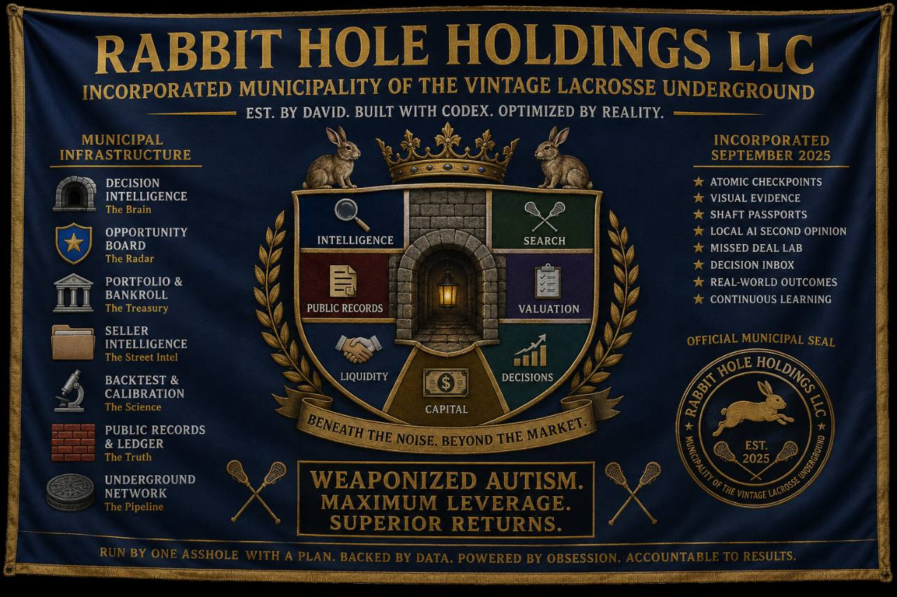

Rabbit Hole Holdings LLC · Read-only field report
Vintage Lacrosse Finds
A phone-friendly snapshot from the local flip tracker. Use the filters, then open any result directly on its original marketplace.

Rabbit Hole Holdings LLC · Read-only field report
A phone-friendly snapshot from the local flip tracker. Use the filters, then open any result directly on its original marketplace.